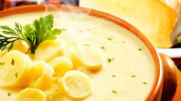

Creme de queijo e palmito

Ingredientes
- 2 dentes de alho picado
- 3 palmitos em rodela
- 200 ml + 100 ml de leite
- 2 colheres (sopa) de amido de milho
- 3 colheres (sopa) de queijo muçarela ralado
- 1 lata de creme de leite
- QB de sal, noz moscada e pimenta do reino
Modo de preparo
- Levar ao fogo o alho, o palmito e 200 ml de leite até ferver.
- Diluir o amido de milho em 100 ml de leite e despejar na mistura da panela, mexendo até engrossar.
- Desligar o fogo e acrescentar a nata e o queijo.
- Ajustar os temperos e servir.
Observação
Receita da Cristina, tia Zona.